A medium roasted coffee, well-balanced and sourced from the cloud forests of the Coban region in Guatemala. Cupping notes include: friendly, lightly citric, and sweetly balanced with a medium body.
Buying this coffee helps preserve and protect forests that are habitats for numerous endangered birds and wildlife. Ideal for specialty coffee lovers seeking a natural process with a mild, prominent natural flavor, lasting aftertaste, and creamy body. Tasting notes include artisanal chocolate walnut and pomegranate. walnut and pomegranate.
Our medium-dark roast is made by combining beans from the Cobán region, appealing to those who enjoy strong coffee with balanced flavors, body, and sweetness. Cupping reveals notes of dark chocolate, caramel, and a touch of cinnamon spice.
Our most loved blend! Exceptionally well-balanced and sweet. Made with only the finest coffee beans from the elevated cloud forests of Cobán. Tasting notes: dark chocolate, brown sugar, and citrus fruit.
Ideal for those who appreciate specialty coffee and prefer a mild, clearly noticeable natural flavor with a long-lasting aftertaste and creamy texture. Cupping Notes: Handcrafted chocolatey walnut and pomegranate.
Our inaugural organic harvest! A great coffee to enjoy with friends and family. Perfect for those who appreciate specialty coffee made through organic methods. Tasting Notes: Well-structured cup with good body and sweetness. It has a very pleasant fragrance with hints of fruit like orange, caramel, and peach.
Since 1888 it has been our mission to deliver the best coffees; carefully selected and craft roasted to perfection with the same passion for quality that founded our company. We are proud to be a 4th generation family owned company with more than 135 years of experience in superior quality coffees.
